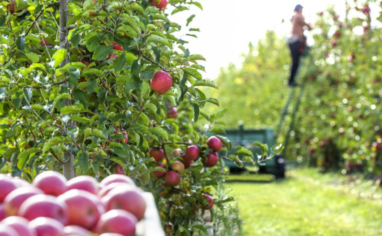
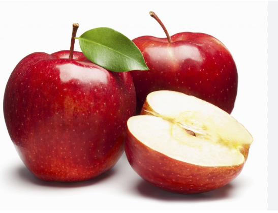

practica 6
la cosecha de la manzana

breve historia de la manzana
la manzana es el fruto comestible de la especie el manzano comun es una fruta
la manzana procede de un arbol caducada de a 2 a 4.5 m de altura en cultivo
cuando se cultiva el tamaño y la forma son ovalos simple y se inclinan ligeramente hacia abajo

- la republica popular china con 16 millones de toneladas
- turquia con 4.5 millones de toneladas
- estados unidos con 4.4 millones de toneladas
- polonia con 4 millones toneladas
- india con 2.2 millones de toneladas
- iran con 2.1 milloones de toneladas

maestra: bertha perez
grupo : 4bpm materia :das ydac
frase:tengo hambre de exito y voy ah ganar